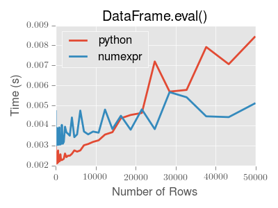

In this part of the tutorial, we will investigate how to speed up certain functions operating on pandas DataFrames using three different techniques: Cython, Numba and pandas.eval(). We will see a speed improvement of ~200 when we use Cython and Numba on a test function operating row-wise on the DataFrame. Using pandas.eval() we will speed up a sum by an order of ~2.
DataFrames
pandas.eval()
DataFrame
For many use cases writing pandas in pure Python and NumPy is sufficient. In some computationally heavy applications however, it can be possible to achieve sizable speed-ups by offloading work to cython.
This tutorial assumes you have refactored as much as possible in Python, for example by trying to remove for-loops and making use of NumPy vectorization. It’s always worth optimising in Python first.
This tutorial walks through a “typical” process of cythonizing a slow computation. We use an example from the Cython documentation but in the context of pandas. Our final cythonized solution is around 100 times faster than the pure Python solution.
We have a DataFrame to which we want to apply a function row-wise.
In [1]: df = pd.DataFrame({'a': np.random.randn(1000), ...: 'b': np.random.randn(1000), ...: 'N': np.random.randint(100, 1000, (1000)), ...: 'x': 'x'}) ...: In [2]: df Out[2]: a b N x 0 0.469112 -0.218470 585 x 1 -0.282863 -0.061645 841 x 2 -1.509059 -0.723780 251 x 3 -1.135632 0.551225 972 x 4 1.212112 -0.497767 181 x .. ... ... ... .. 995 -1.512743 0.874737 374 x 996 0.933753 1.120790 246 x 997 -0.308013 0.198768 157 x 998 -0.079915 1.757555 977 x 999 -1.010589 -1.115680 770 x [1000 rows x 4 columns]
Here’s the function in pure Python:
In [3]: def f(x): ...: return x * (x - 1) ...: In [4]: def integrate_f(a, b, N): ...: s = 0 ...: dx = (b - a) / N ...: for i in range(N): ...: s += f(a + i * dx) ...: return s * dx ...:
We achieve our result by using apply (row-wise):
apply
In [7]: %timeit df.apply(lambda x: integrate_f(x['a'], x['b'], x['N']), axis=1) 10 loops, best of 3: 174 ms per loop
But clearly this isn’t fast enough for us. Let’s take a look and see where the time is spent during this operation (limited to the most time consuming four calls) using the prun ipython magic function:
In [5]: %prun -l 4 df.apply(lambda x: integrate_f(x['a'], x['b'], x['N']), axis=1) # noqa E999 764218 function calls (761192 primitive calls) in 0.286 seconds Ordered by: internal time List reduced from 225 to 4 due to restriction <4> ncalls tottime percall cumtime percall filename:lineno(function) 1000 0.109 0.000 0.161 0.000 <ipython-input-4-c2a74e076cf0>:1(integrate_f) 552423 0.052 0.000 0.052 0.000 <ipython-input-3-c138bdd570e3>:1(f) 3000 0.010 0.000 0.110 0.000 base.py:4622(get_value) 3000 0.009 0.000 0.061 0.000 base.py:682(array)
By far the majority of time is spend inside either integrate_f or f, hence we’ll concentrate our efforts cythonizing these two functions.
integrate_f
f
Note
In Python 2 replacing the range with its generator counterpart (xrange) would mean the range line would vanish. In Python 3 range is already a generator.
range
xrange
First we’re going to need to import the Cython magic function to ipython:
In [6]: %load_ext Cython
Now, let’s simply copy our functions over to Cython as is (the suffix is here to distinguish between function versions):
In [7]: %%cython ...: def f_plain(x): ...: return x * (x - 1) ...: def integrate_f_plain(a, b, N): ...: s = 0 ...: dx = (b - a) / N ...: for i in range(N): ...: s += f_plain(a + i * dx) ...: return s * dx ...:
If you’re having trouble pasting the above into your ipython, you may need to be using bleeding edge ipython for paste to play well with cell magics.
In [4]: %timeit df.apply(lambda x: integrate_f_plain(x['a'], x['b'], x['N']), axis=1) 10 loops, best of 3: 85.5 ms per loop
Already this has shaved a third off, not too bad for a simple copy and paste.
We get another huge improvement simply by providing type information:
In [8]: %%cython ...: cdef double f_typed(double x) except? -2: ...: return x * (x - 1) ...: cpdef double integrate_f_typed(double a, double b, int N): ...: cdef int i ...: cdef double s, dx ...: s = 0 ...: dx = (b - a) / N ...: for i in range(N): ...: s += f_typed(a + i * dx) ...: return s * dx ...:
In [4]: %timeit df.apply(lambda x: integrate_f_typed(x['a'], x['b'], x['N']), axis=1) 10 loops, best of 3: 20.3 ms per loop
Now, we’re talking! It’s now over ten times faster than the original python implementation, and we haven’t really modified the code. Let’s have another look at what’s eating up time:
In [9]: %prun -l 4 df.apply(lambda x: integrate_f_typed(x['a'], x['b'], x['N']), axis=1) 211791 function calls (208765 primitive calls) in 0.122 seconds Ordered by: internal time List reduced from 220 to 4 due to restriction <4> ncalls tottime percall cumtime percall filename:lineno(function) 3000 0.009 0.000 0.105 0.000 base.py:4622(get_value) 3000 0.009 0.000 0.058 0.000 base.py:682(array) 33354 0.008 0.000 0.014 0.000 {built-in method builtins.isinstance} 3000 0.008 0.000 0.020 0.000 numpy_.py:43(__init__)
It’s calling series… a lot! It’s creating a Series from each row, and get-ting from both the index and the series (three times for each row). Function calls are expensive in Python, so maybe we could minimize these by cythonizing the apply part.
We are now passing ndarrays into the Cython function, fortunately Cython plays very nicely with NumPy.
In [10]: %%cython ....: cimport numpy as np ....: import numpy as np ....: cdef double f_typed(double x) except? -2: ....: return x * (x - 1) ....: cpdef double integrate_f_typed(double a, double b, int N): ....: cdef int i ....: cdef double s, dx ....: s = 0 ....: dx = (b - a) / N ....: for i in range(N): ....: s += f_typed(a + i * dx) ....: return s * dx ....: cpdef np.ndarray[double] apply_integrate_f(np.ndarray col_a, np.ndarray col_b, ....: np.ndarray col_N): ....: assert (col_a.dtype == np.float ....: and col_b.dtype == np.float and col_N.dtype == np.int) ....: cdef Py_ssize_t i, n = len(col_N) ....: assert (len(col_a) == len(col_b) == n) ....: cdef np.ndarray[double] res = np.empty(n) ....: for i in range(len(col_a)): ....: res[i] = integrate_f_typed(col_a[i], col_b[i], col_N[i]) ....: return res ....:
The implementation is simple, it creates an array of zeros and loops over the rows, applying our integrate_f_typed, and putting this in the zeros array.
integrate_f_typed
Warning
You can not pass a Series directly as a ndarray typed parameter to a Cython function. Instead pass the actual ndarray using the Series.to_numpy(). The reason is that the Cython definition is specific to an ndarray and not the passed Series.
Series
ndarray
Series.to_numpy()
So, do not do this:
apply_integrate_f(df['a'], df['b'], df['N'])
But rather, use Series.to_numpy() to get the underlying ndarray:
apply_integrate_f(df['a'].to_numpy(), df['b'].to_numpy(), df['N'].to_numpy())
Loops like this would be extremely slow in Python, but in Cython looping over NumPy arrays is fast.
In [4]: %timeit apply_integrate_f(df['a'].to_numpy(), df['b'].to_numpy(), df['N'].to_numpy()) 1000 loops, best of 3: 1.25 ms per loop
We’ve gotten another big improvement. Let’s check again where the time is spent:
In [11]: %%prun -l 4 apply_integrate_f(df['a'].to_numpy(), ....: df['b'].to_numpy(), ....: df['N'].to_numpy()) ....: 260 function calls in 0.002 seconds Ordered by: internal time List reduced from 65 to 4 due to restriction <4> ncalls tottime percall cumtime percall filename:lineno(function) 1 0.001 0.001 0.001 0.001 {built-in method _cython_magic_f364c5c3b49720b522712e915b9c9541.apply_integrate_f} 3 0.000 0.000 0.000 0.000 frame.py:2760(__getitem__) 1 0.000 0.000 0.002 0.002 {built-in method builtins.exec} 3 0.000 0.000 0.000 0.000 managers.py:945(iget)
As one might expect, the majority of the time is now spent in apply_integrate_f, so if we wanted to make anymore efficiencies we must continue to concentrate our efforts here.
apply_integrate_f
There is still hope for improvement. Here’s an example of using some more advanced Cython techniques:
In [12]: %%cython ....: cimport cython ....: cimport numpy as np ....: import numpy as np ....: cdef double f_typed(double x) except? -2: ....: return x * (x - 1) ....: cpdef double integrate_f_typed(double a, double b, int N): ....: cdef int i ....: cdef double s, dx ....: s = 0 ....: dx = (b - a) / N ....: for i in range(N): ....: s += f_typed(a + i * dx) ....: return s * dx ....: @cython.boundscheck(False) ....: @cython.wraparound(False) ....: cpdef np.ndarray[double] apply_integrate_f_wrap(np.ndarray[double] col_a, ....: np.ndarray[double] col_b, ....: np.ndarray[int] col_N): ....: cdef int i, n = len(col_N) ....: assert len(col_a) == len(col_b) == n ....: cdef np.ndarray[double] res = np.empty(n) ....: for i in range(n): ....: res[i] = integrate_f_typed(col_a[i], col_b[i], col_N[i]) ....: return res ....:
In [4]: %timeit apply_integrate_f_wrap(df['a'].to_numpy(), df['b'].to_numpy(), df['N'].to_numpy()) 1000 loops, best of 3: 987 us per loop
Even faster, with the caveat that a bug in our Cython code (an off-by-one error, for example) might cause a segfault because memory access isn’t checked. For more about boundscheck and wraparound, see the Cython docs on compiler directives.
boundscheck
wraparound
A recent alternative to statically compiling Cython code, is to use a dynamic jit-compiler, Numba.
Numba gives you the power to speed up your applications with high performance functions written directly in Python. With a few annotations, array-oriented and math-heavy Python code can be just-in-time compiled to native machine instructions, similar in performance to C, C++ and Fortran, without having to switch languages or Python interpreters.
Numba works by generating optimized machine code using the LLVM compiler infrastructure at import time, runtime, or statically (using the included pycc tool). Numba supports compilation of Python to run on either CPU or GPU hardware, and is designed to integrate with the Python scientific software stack.
You will need to install Numba. This is easy with conda, by using: conda install numba, see installing using miniconda.
conda
conda install numba
As of Numba version 0.20, pandas objects cannot be passed directly to Numba-compiled functions. Instead, one must pass the NumPy array underlying the pandas object to the Numba-compiled function as demonstrated below.
We demonstrate how to use Numba to just-in-time compile our code. We simply take the plain Python code from above and annotate with the @jit decorator.
@jit
import numba @numba.jit def f_plain(x): return x * (x - 1) @numba.jit def integrate_f_numba(a, b, N): s = 0 dx = (b - a) / N for i in range(N): s += f_plain(a + i * dx) return s * dx @numba.jit def apply_integrate_f_numba(col_a, col_b, col_N): n = len(col_N) result = np.empty(n, dtype='float64') assert len(col_a) == len(col_b) == n for i in range(n): result[i] = integrate_f_numba(col_a[i], col_b[i], col_N[i]) return result def compute_numba(df): result = apply_integrate_f_numba(df['a'].to_numpy(), df['b'].to_numpy(), df['N'].to_numpy()) return pd.Series(result, index=df.index, name='result')
Note that we directly pass NumPy arrays to the Numba function. compute_numba is just a wrapper that provides a nicer interface by passing/returning pandas objects.
compute_numba
In [4]: %timeit compute_numba(df) 1000 loops, best of 3: 798 us per loop
In this example, using Numba was faster than Cython.
Numba can also be used to write vectorized functions that do not require the user to explicitly loop over the observations of a vector; a vectorized function will be applied to each row automatically. Consider the following toy example of doubling each observation:
import numba def double_every_value_nonumba(x): return x * 2 @numba.vectorize def double_every_value_withnumba(x): # noqa E501 return x * 2
# Custom function without numba In [5]: %timeit df['col1_doubled'] = df['a'].apply(double_every_value_nonumba) # noqa E501 1000 loops, best of 3: 797 us per loop # Standard implementation (faster than a custom function) In [6]: %timeit df['col1_doubled'] = df['a'] * 2 1000 loops, best of 3: 233 us per loop # Custom function with numba In [7]: %timeit (df['col1_doubled'] = double_every_value_withnumba(df['a'].to_numpy()) 1000 loops, best of 3: 145 us per loop
Numba will execute on any function, but can only accelerate certain classes of functions.
Numba is best at accelerating functions that apply numerical functions to NumPy arrays. When passed a function that only uses operations it knows how to accelerate, it will execute in nopython mode.
nopython
If Numba is passed a function that includes something it doesn’t know how to work with – a category that currently includes sets, lists, dictionaries, or string functions – it will revert to object mode. In object mode, Numba will execute but your code will not speed up significantly. If you would prefer that Numba throw an error if it cannot compile a function in a way that speeds up your code, pass Numba the argument nopython=True (e.g. @numba.jit(nopython=True)). For more on troubleshooting Numba modes, see the Numba troubleshooting page.
object mode
nopython=True
@numba.jit(nopython=True)
Read more in the Numba docs.
eval()
The top-level function pandas.eval() implements expression evaluation of Series and DataFrame objects.
To benefit from using eval() you need to install numexpr. See the recommended dependencies section for more details.
numexpr
The point of using eval() for expression evaluation rather than plain Python is two-fold: 1) large DataFrame objects are evaluated more efficiently and 2) large arithmetic and boolean expressions are evaluated all at once by the underlying engine (by default numexpr is used for evaluation).
You should not use eval() for simple expressions or for expressions involving small DataFrames. In fact, eval() is many orders of magnitude slower for smaller expressions/objects than plain ol’ Python. A good rule of thumb is to only use eval() when you have a DataFrame with more than 10,000 rows.
eval() supports all arithmetic expressions supported by the engine in addition to some extensions available only in pandas.
The larger the frame and the larger the expression the more speedup you will see from using eval().
These operations are supported by pandas.eval():
Arithmetic operations except for the left shift (<<) and right shift (>>) operators, e.g., df + 2 * pi / s ** 4 % 42 - the_golden_ratio
<<
>>
df + 2 * pi / s ** 4 % 42 - the_golden_ratio
Comparison operations, including chained comparisons, e.g., 2 < df < df2
2 < df < df2
Boolean operations, e.g., df < df2 and df3 < df4 or not df_bool
df < df2 and df3 < df4 or not df_bool
list and tuple literals, e.g., [1, 2] or (1, 2)
list
tuple
[1, 2]
(1, 2)
Attribute access, e.g., df.a
df.a
Subscript expressions, e.g., df[0]
df[0]
Simple variable evaluation, e.g., pd.eval('df') (this is not very useful)
pd.eval('df')
Math functions: sin, cos, exp, log, expm1, log1p, sqrt, sinh, cosh, tanh, arcsin, arccos, arctan, arccosh, arcsinh, arctanh, abs, arctan2 and log10.
This Python syntax is not allowed:
Expressions
Function calls other than math functions. is/is not operations if expressions lambda expressions list/set/dict comprehensions Literal dict and set expressions yield expressions Generator expressions Boolean expressions consisting of only scalar values
Function calls other than math functions.
is/is not operations
is
is not
if expressions
if
lambda expressions
lambda
list/set/dict comprehensions
set
dict
Literal dict and set expressions
yield expressions
yield
Generator expressions
Boolean expressions consisting of only scalar values
Statements
Neither simple nor compound statements are allowed. This includes things like for, while, and if.
for
while
pandas.eval() works well with expressions containing large arrays.
First let’s create a few decent-sized arrays to play with:
In [13]: nrows, ncols = 20000, 100 In [14]: df1, df2, df3, df4 = [pd.DataFrame(np.random.randn(nrows, ncols)) for _ in range(4)]
Now let’s compare adding them together using plain ol’ Python versus eval():
In [15]: %timeit df1 + df2 + df3 + df4 19.3 ms +- 702 us per loop (mean +- std. dev. of 7 runs, 100 loops each)
In [16]: %timeit pd.eval('df1 + df2 + df3 + df4') 21.3 ms +- 980 us per loop (mean +- std. dev. of 7 runs, 100 loops each)
Now let’s do the same thing but with comparisons:
In [17]: %timeit (df1 > 0) & (df2 > 0) & (df3 > 0) & (df4 > 0) 91.7 ms +- 7.58 ms per loop (mean +- std. dev. of 7 runs, 10 loops each)
In [18]: %timeit pd.eval('(df1 > 0) & (df2 > 0) & (df3 > 0) & (df4 > 0)') 98.1 ms +- 6.62 ms per loop (mean +- std. dev. of 7 runs, 10 loops each)
eval() also works with unaligned pandas objects:
In [19]: s = pd.Series(np.random.randn(50)) In [20]: %timeit df1 + df2 + df3 + df4 + s 64.3 ms +- 5.35 ms per loop (mean +- std. dev. of 7 runs, 10 loops each)
In [21]: %timeit pd.eval('df1 + df2 + df3 + df4 + s') 61.7 ms +- 9.63 ms per loop (mean +- std. dev. of 7 runs, 10 loops each)
Operations such as
1 and 2 # would parse to 1 & 2, but should evaluate to 2 3 or 4 # would parse to 3 | 4, but should evaluate to 3 ~1 # this is okay, but slower when using eval
should be performed in Python. An exception will be raised if you try to perform any boolean/bitwise operations with scalar operands that are not of type bool or np.bool_. Again, you should perform these kinds of operations in plain Python.
bool
np.bool_
DataFrame.eval
In addition to the top level pandas.eval() function you can also evaluate an expression in the “context” of a DataFrame.
In [22]: df = pd.DataFrame(np.random.randn(5, 2), columns=['a', 'b']) In [23]: df.eval('a + b') Out[23]: 0 -0.246747 1 0.867786 2 -1.626063 3 -1.134978 4 -1.027798 dtype: float64
Any expression that is a valid pandas.eval() expression is also a valid DataFrame.eval() expression, with the added benefit that you don’t have to prefix the name of the DataFrame to the column(s) you’re interested in evaluating.
DataFrame.eval()
In addition, you can perform assignment of columns within an expression. This allows for formulaic evaluation. The assignment target can be a new column name or an existing column name, and it must be a valid Python identifier.
The inplace keyword determines whether this assignment will performed on the original DataFrame or return a copy with the new column.
inplace
For backwards compatibility, inplace defaults to True if not specified. This will change in a future version of pandas - if your code depends on an inplace assignment you should update to explicitly set inplace=True.
True
inplace=True
In [24]: df = pd.DataFrame(dict(a=range(5), b=range(5, 10))) In [25]: df.eval('c = a + b', inplace=True) In [26]: df.eval('d = a + b + c', inplace=True) In [27]: df.eval('a = 1', inplace=True) In [28]: df Out[28]: a b c d 0 1 5 5 10 1 1 6 7 14 2 1 7 9 18 3 1 8 11 22 4 1 9 13 26
When inplace is set to False, a copy of the DataFrame with the new or modified columns is returned and the original frame is unchanged.
False
In [29]: df Out[29]: a b c d 0 1 5 5 10 1 1 6 7 14 2 1 7 9 18 3 1 8 11 22 4 1 9 13 26 In [30]: df.eval('e = a - c', inplace=False) Out[30]: a b c d e 0 1 5 5 10 -4 1 1 6 7 14 -6 2 1 7 9 18 -8 3 1 8 11 22 -10 4 1 9 13 26 -12 In [31]: df Out[31]: a b c d 0 1 5 5 10 1 1 6 7 14 2 1 7 9 18 3 1 8 11 22 4 1 9 13 26
As a convenience, multiple assignments can be performed by using a multi-line string.
In [32]: df.eval(""" ....: c = a + b ....: d = a + b + c ....: a = 1""", inplace=False) ....: Out[32]: a b c d 0 1 5 6 12 1 1 6 7 14 2 1 7 8 16 3 1 8 9 18 4 1 9 10 20
The equivalent in standard Python would be
In [33]: df = pd.DataFrame(dict(a=range(5), b=range(5, 10))) In [34]: df['c'] = df['a'] + df['b'] In [35]: df['d'] = df['a'] + df['b'] + df['c'] In [36]: df['a'] = 1 In [37]: df Out[37]: a b c d 0 1 5 5 10 1 1 6 7 14 2 1 7 9 18 3 1 8 11 22 4 1 9 13 26
The query method has a inplace keyword which determines whether the query modifies the original frame.
query
In [38]: df = pd.DataFrame(dict(a=range(5), b=range(5, 10))) In [39]: df.query('a > 2') Out[39]: a b 3 3 8 4 4 9 In [40]: df.query('a > 2', inplace=True) In [41]: df Out[41]: a b 3 3 8 4 4 9
Unlike with eval, the default value for inplace for query is False. This is consistent with prior versions of pandas.
eval
You must explicitly reference any local variable that you want to use in an expression by placing the @ character in front of the name. For example,
@
In [42]: df = pd.DataFrame(np.random.randn(5, 2), columns=list('ab')) In [43]: newcol = np.random.randn(len(df)) In [44]: df.eval('b + @newcol') Out[44]: 0 -0.173926 1 2.493083 2 -0.881831 3 -0.691045 4 1.334703 Name: b, dtype: float64 In [45]: df.query('b < @newcol') Out[45]: a b 0 0.863987 -0.115998 2 -2.621419 -1.297879
If you don’t prefix the local variable with @, pandas will raise an exception telling you the variable is undefined.
When using DataFrame.eval() and DataFrame.query(), this allows you to have a local variable and a DataFrame column with the same name in an expression.
DataFrame.query()
In [46]: a = np.random.randn() In [47]: df.query('@a < a') Out[47]: a b 0 0.863987 -0.115998 In [48]: df.loc[a < df['a']] # same as the previous expression Out[48]: a b 0 0.863987 -0.115998
With pandas.eval() you cannot use the @ prefix at all, because it isn’t defined in that context. pandas will let you know this if you try to use @ in a top-level call to pandas.eval(). For example,
pandas
In [49]: a, b = 1, 2 In [50]: pd.eval('@a + b') Traceback (most recent call last): File "/home/joris/miniconda3/envs/docs/lib/python3.7/site-packages/IPython/core/interactiveshell.py", line 3319, in run_code exec(code_obj, self.user_global_ns, self.user_ns) File "<ipython-input-50-af17947a194f>", line 1, in <module> pd.eval('@a + b') File "/home/joris/scipy/pandas/pandas/core/computation/eval.py", line 321, in eval _check_for_locals(expr, level, parser) File "/home/joris/scipy/pandas/pandas/core/computation/eval.py", line 167, in _check_for_locals raise SyntaxError(msg) File "<string>", line unknown SyntaxError: The '@' prefix is not allowed in top-level eval calls, please refer to your variables by name without the '@' prefix
In this case, you should simply refer to the variables like you would in standard Python.
In [51]: pd.eval('a + b') Out[51]: 3
There are two different parsers and two different engines you can use as the backend.
The default 'pandas' parser allows a more intuitive syntax for expressing query-like operations (comparisons, conjunctions and disjunctions). In particular, the precedence of the & and | operators is made equal to the precedence of the corresponding boolean operations and and or.
'pandas'
&
|
and
or
For example, the above conjunction can be written without parentheses. Alternatively, you can use the 'python' parser to enforce strict Python semantics.
'python'
In [52]: expr = '(df1 > 0) & (df2 > 0) & (df3 > 0) & (df4 > 0)' In [53]: x = pd.eval(expr, parser='python') In [54]: expr_no_parens = 'df1 > 0 & df2 > 0 & df3 > 0 & df4 > 0' In [55]: y = pd.eval(expr_no_parens, parser='pandas') In [56]: np.all(x == y) Out[56]: True
The same expression can be “anded” together with the word and as well:
In [57]: expr = '(df1 > 0) & (df2 > 0) & (df3 > 0) & (df4 > 0)' In [58]: x = pd.eval(expr, parser='python') In [59]: expr_with_ands = 'df1 > 0 and df2 > 0 and df3 > 0 and df4 > 0' In [60]: y = pd.eval(expr_with_ands, parser='pandas') In [61]: np.all(x == y) Out[61]: True
The and and or operators here have the same precedence that they would in vanilla Python.
There’s also the option to make eval() operate identical to plain ol’ Python.
Using the 'python' engine is generally not useful, except for testing other evaluation engines against it. You will achieve no performance benefits using eval() with engine='python' and in fact may incur a performance hit.
engine='python'
You can see this by using pandas.eval() with the 'python' engine. It is a bit slower (not by much) than evaluating the same expression in Python
In [62]: %timeit df1 + df2 + df3 + df4 20.6 ms +- 2.52 ms per loop (mean +- std. dev. of 7 runs, 10 loops each)
In [63]: %timeit pd.eval('df1 + df2 + df3 + df4', engine='python') 20.4 ms +- 928 us per loop (mean +- std. dev. of 7 runs, 100 loops each)
eval() is intended to speed up certain kinds of operations. In particular, those operations involving complex expressions with large DataFrame/Series objects should see a significant performance benefit. Here is a plot showing the running time of pandas.eval() as function of the size of the frame involved in the computation. The two lines are two different engines.
Operations with smallish objects (around 15k-20k rows) are faster using plain Python:

This plot was created using a DataFrame with 3 columns each containing floating point values generated using numpy.random.randn().
numpy.random.randn()
Expressions that would result in an object dtype or involve datetime operations (because of NaT) must be evaluated in Python space. The main reason for this behavior is to maintain backwards compatibility with versions of NumPy < 1.7. In those versions of NumPy a call to ndarray.astype(str) will truncate any strings that are more than 60 characters in length. Second, we can’t pass object arrays to numexpr thus string comparisons must be evaluated in Python space.
NaT
ndarray.astype(str)
object
The upshot is that this only applies to object-dtype expressions. So, if you have an expression–for example
In [64]: df = pd.DataFrame({'strings': np.repeat(list('cba'), 3), ....: 'nums': np.repeat(range(3), 3)}) ....: In [65]: df Out[65]: strings nums 0 c 0 1 c 0 2 c 0 3 b 1 4 b 1 5 b 1 6 a 2 7 a 2 8 a 2 In [66]: df.query('strings == "a" and nums == 1') Out[66]: Empty DataFrame Columns: [strings, nums] Index: []
the numeric part of the comparison (nums == 1) will be evaluated by numexpr.
nums == 1
In general, DataFrame.query()/pandas.eval() will evaluate the subexpressions that can be evaluated by numexpr and those that must be evaluated in Python space transparently to the user. This is done by inferring the result type of an expression from its arguments and operators.